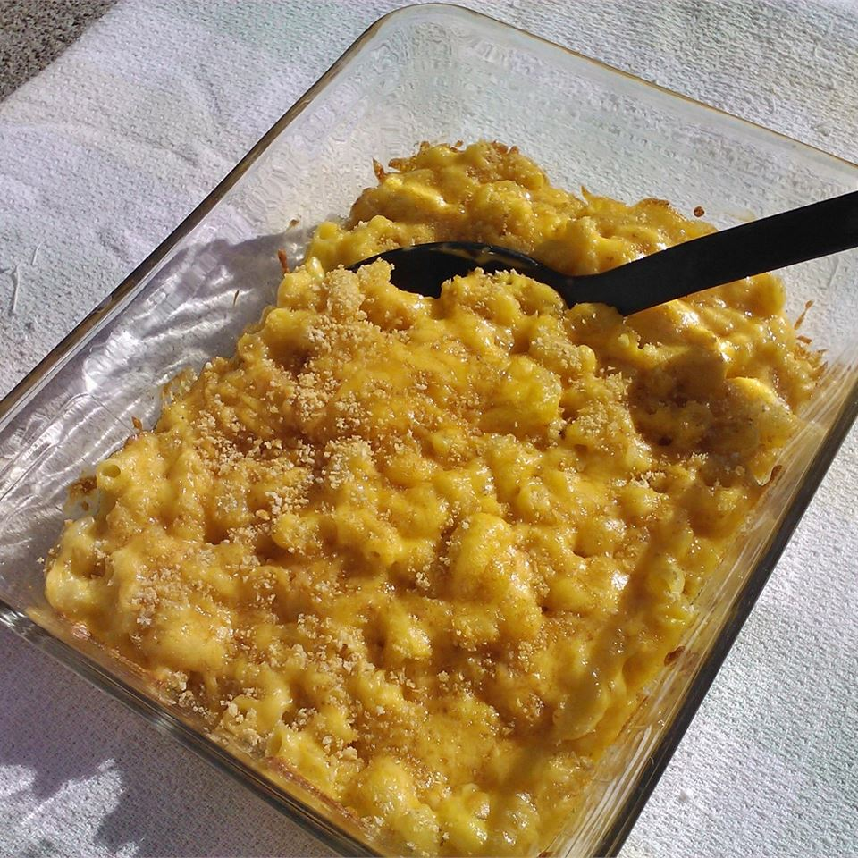

Old School Mac & Cheese

A delicious dish of Macaroni and Cheese with a crust of potato chips. A homestyle dish often requested by friends and family once they've tried it! For the original recipe from allrecipes, please click here
Ingredients (makes approximately 20 servings)
- 1 3/4 pounds whole-wheat macaroni noodles
- 3/4 cup butter
- 3/4 cup all-purpose flour
- 6 cups milk, divided
- 1 tablespoon worcestershire sauce
- 1 teaspoon mustard powder
- 1 teaspoon onion powder
- 1 teaspoon cayenne pepper
- salt and ground black pepper to taste
- 1 package, 8 ounces, shredded cheddar cheese, divided
- 3 packages, 8 ounces, shredded American cheese
- 1 bag, 8 ounces, of potato chips, crushed
- 1 cup shredded cheddar cheese
- 1/3 cup grated parmesan cheese
- butter-flavored cooking spray
Directions
- Preheat oven to 375 degrees F
- Bring a large pot of lightly salted water to a boil. Cook macaroni in the boiling water, stirring occasionally, until cooked through but firm to bite, approximately 8 minutes, then drain.
- Melt butter in a large pot over medium-low heat. Slowly add flour to butter, whisking constantly, and cook until brown and the mixture no longer smells of flour, about 5 minutes. Pour 1 cup milk into the flour mixture, whisking continually until fully incorporated, about 45 seconds; repeat twice. Add remaining 3 cups milk to the mixture, whisking to incorporate. Stir Worcestershire sauce, mustard powder, onion powder, and cayenne pepper into the mixture; season with salt and black pepper.
- Reduce heat to low. Cook sauce, whisking frequently, until it begins to thicken, about 10 minutes. Add about half the package of shredded Cheddar cheese; stir continually until the cheese melts completely. Repeat with remaining half package of Cheddar cheese and the American cheese, about 4 ounces at a time. Once cheese is entirely incorporated, remove sauce from heat.
- Stir drained macaroni into the cheese sauce to coat. Divide macaroni between two 9x13-inch baking dishes.
- Mix crushed potato chips, 1 cup shredded Cheddar cheese, and Parmesan cheese in a bowl. Top the macaroni with the potato chip mixture evenly. Spray the potato chip mixture with cooking spray.
- Bake in preheated oven until the crust is golden brown and the sauce is bubbling, 35 to 45 minutes.